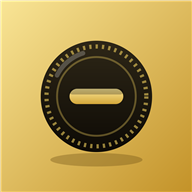

écuApplication mobile de suivi de dépenses et d'épargne : import du CSV de la banque, catégorisation automatique, budgets, analyses et patrimoine.
Sur téléphone, secouer l'appareil floute les montants (ici : Réglages › Flouter les montants). Le verrouillage biométrique est propre à l'application mobile.